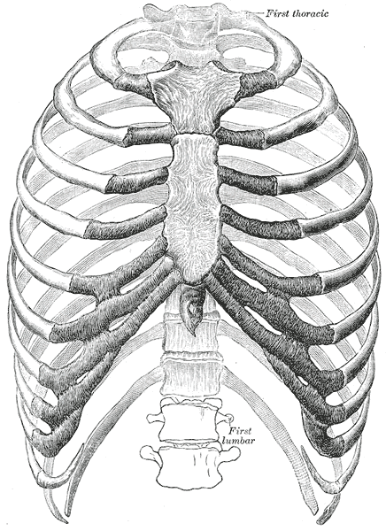

Gray's Anatomy: Thoracic Spine Plates
Henry Gray's Anatomy of the Human Body, 20th Edition (1918)
Source: Public domain images from Gray's Anatomy, 20th edition (1918).
Illustrated by Henry Vandyke Carter (1831-1897). These classic anatomical plates represent
the gold standard of anatomical illustration from the pre-digital era, known for their
exceptional accuracy and clarity.
Plate 90
A Thoracic Vertebra

Lateral view of a typical thoracic vertebra showing the characteristic features:
heart-shaped vertebral body, long downward-pointing spinous process, and costal
facets on the vertebral body and transverse processes for rib articulation.
Clinical Relevance: Thoracic vertebrae have superior and inferior
costal demifacets on the vertebral bodies that articulate with the heads of ribs.
The spinous processes overlap like shingles, limiting extension but providing stability.
Plate 91
Peculiar Thoracic Vertebrae

Comparative illustration showing the unique features of thoracic vertebrae at
different levels. Note the transitional characteristics between upper thoracic
(more cervical-like) and lower thoracic (more lumbar-like) vertebrae.
Clinical Relevance: T1 has a full costal facet (not demifacets)
for the first rib. T10-T12 may have single costal facets. T12 is transitional,
resembling a lumbar vertebra. These variations affect rib mechanics and spinal mobility.
Plate 112
The Thorax from In Front

Anterior view of the complete thoracic cage showing the sternum (manubrium, body,
xiphoid process), twelve pairs of ribs, and costal cartilages. The thoracic vertebrae
form the posterior column of the thorax. Note the three regions of ribs: true ribs
(1-7), false ribs (8-10), and floating ribs (11-12).
Clinical Relevance: The thoracic cage protects the heart, lungs,
and great vessels. Rib fractures most commonly affect ribs 4-9. The costochondral
junctions are common sites of inflammation (costochondritis/Tietze syndrome).
Plate 1226
Costovertebral Articulations

Detailed view of the articulations between ribs and thoracic vertebrae. Shows the
costovertebral joints (heads of ribs with vertebral bodies) and costotransverse
joints (tubercles of ribs with transverse processes). The radiate ligament and
intra-articular ligament stabilize these connections.
Clinical Relevance: Costovertebral joint dysfunction is a common
source of thoracic back pain. Rib restrictions can impair breathing mechanics and
cause referred pain. These articulations guide the pump-handle and bucket-handle
motions of respiration.
Copyright Notice: These images are from the 20th edition of Gray's Anatomy
(1918), which is in the public domain. The original illustrations were created by
Henry Vandyke Carter (1831-1897), a surgeon and anatomist who worked with Henry Gray
on the first edition of this seminal text.